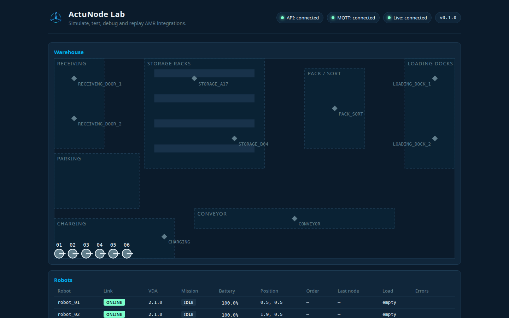

Open source · VDA 5050 2.1 and 3.0 · MQTT
Simulate, test, debug and replay AMR fleet integrations.
Integration problems between a fleet manager, a WMS and mobile robots usually show up on a live site, and the evidence is gone once the robots move on. ActuNode gives you a local copy of that world: simulated robots, every message checked against the official VDA 5050 schemas, failures on command, and recordings you can replay. No physical fleet needed.

What it does
Everything runs on your machine with Docker Compose. Your fleet manager or robot connects over MQTT, exactly as it would on site.
Simulated robots
1 to 50 robots speaking VDA 5050 2.1 or 3.0: orders, base and horizon, order updates, instant actions, factsheets, battery and charging.
Every message checked
Validation against the official VDA 5050 JSON schemas, plus rules that need history: header ids, order sequence, mission state.
Failures on command
Blocked path, low battery, disconnect, an unresponsive robot, malformed messages, a faster robot, a robot that reports its state only every few seconds. See how your fleet manager copes before a customer does.
Record and replay
Record an incident once, then replay it against the system under test as often as you need.
Scenario tests in CI
actunode test runs scenario files with timing and message expectations, with JUnit output
for your pipeline.
Real robots too
Conformance checks for real robots, including ROS 2 robots through InOrbit's open-source VDA 5050 connector.
5 of 5
Gaps found, fixes merged upstream
Running InOrbit's open-source ROS 2 connector in the lab turned up five conformance gaps. All five fixes are now merged upstream, and the lab's ROS 2 robot runs that code unpatched.
Checks that come from the field
- An order with no nodes is rejected, and the vehicle stays up.
- A single-node order is accepted and finished.
- The vehicle stops at the end of the base and continues when the order is extended.
- A rejected order's error does not block the next order.
These came from an AGV integrator's master-control habits. Tell us yours.
Get started
You need Docker with Compose. Three robots appear in the charging area when everything is up.
git clone https://github.com/Bahuncoder/ActuNode.git && cd ActuNode
docker compose up --build
# then open http://localhost:8080More robots: ACTUNODE_SIM_ROBOTS=6. VDA 5050 3.0 robots:
ACTUNODE_VDA_VERSION=3. Apache License 2.0.
ActuNode Cloud: hosted labs, invite-only beta
A lab for your team without running it yourself: sign in with GitHub, create a workspace, and connect your robots or fleet manager over TLS. Hosted in the EU.
We are inviting a small number of teams. To join, write to hello@actunode.com.
Building a fleet manager or a robot?
ActuNode is early, and we want to build what integration engineers actually need. Which VDA 5050 problems are hardest for you to find before go-live? Write to hello@actunode.com or open an issue on GitHub.